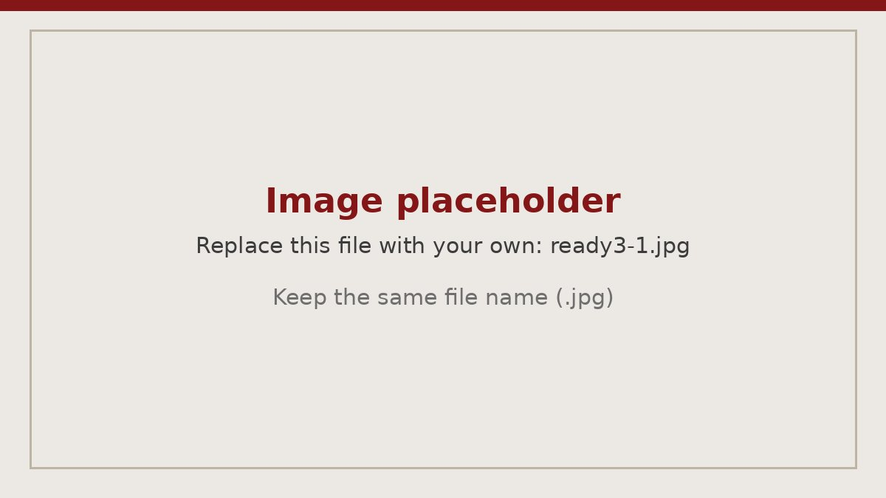
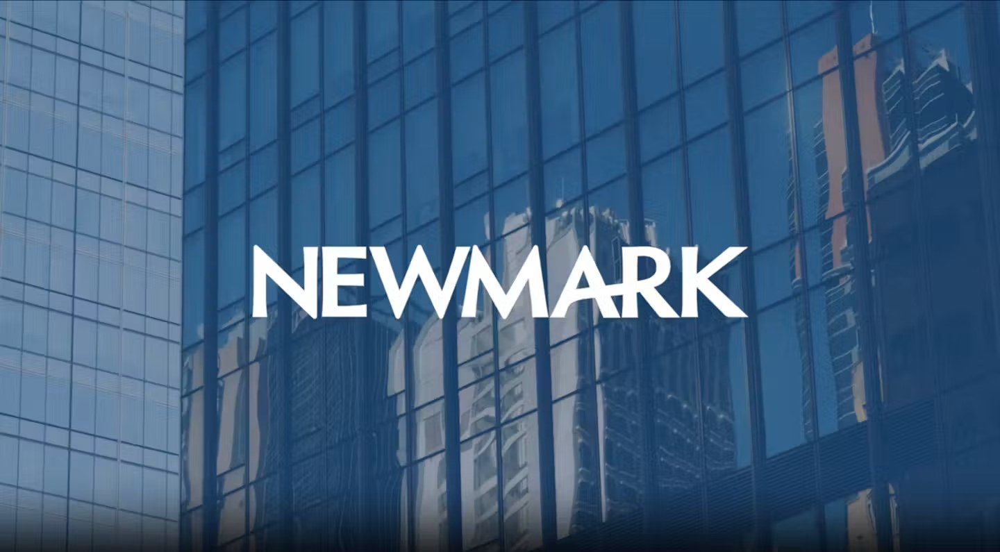
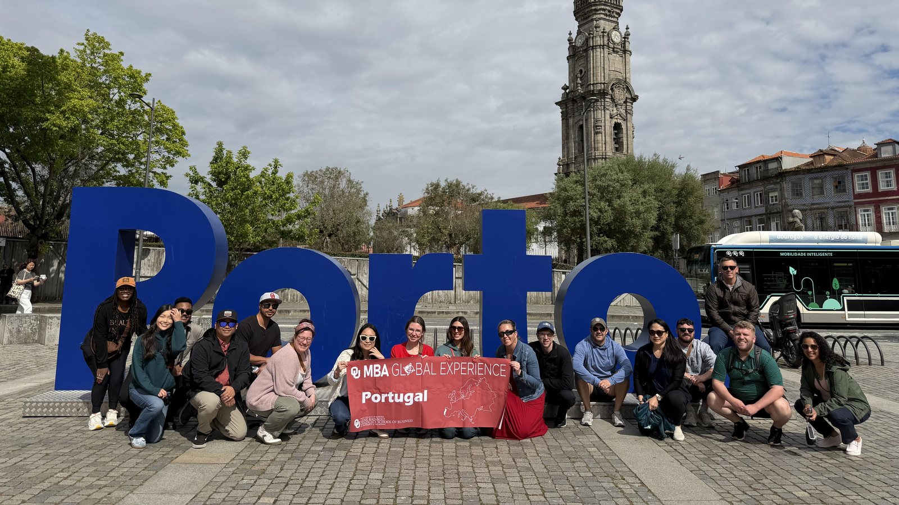
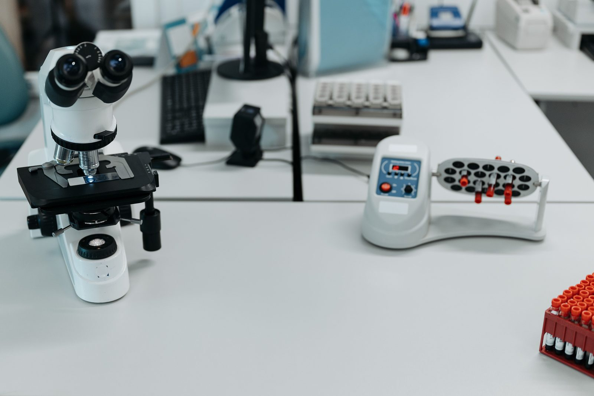
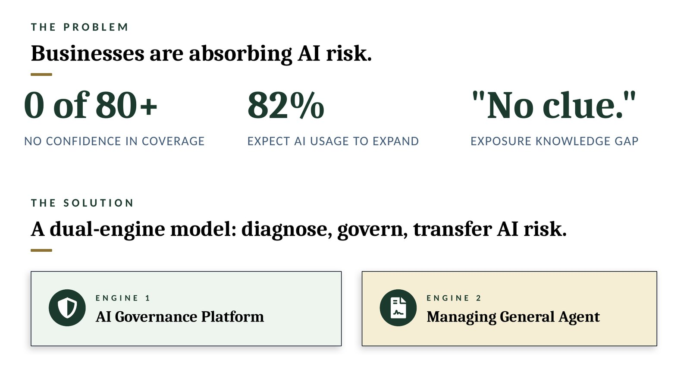
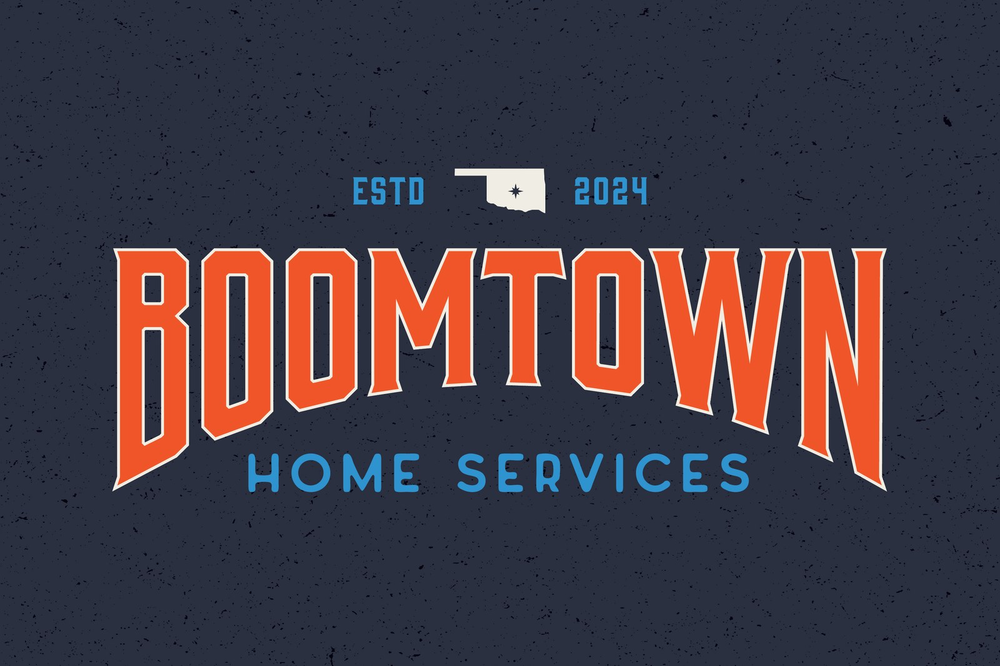
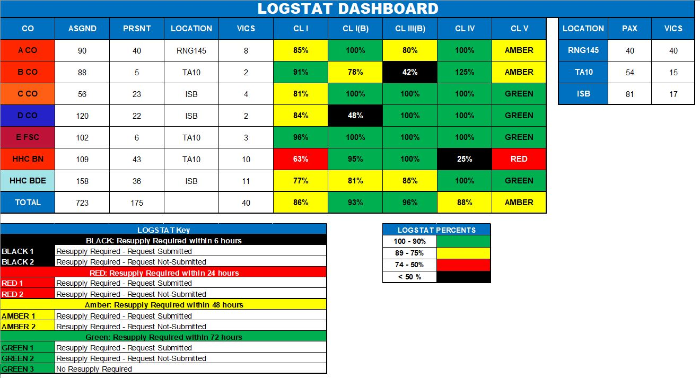
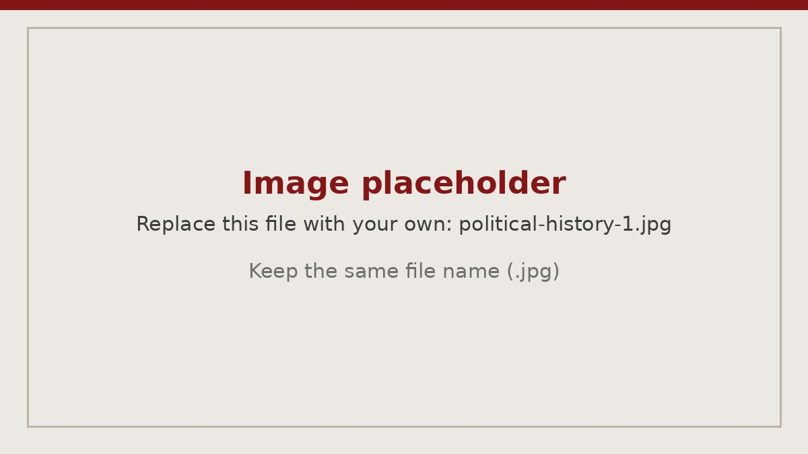

Projects
Consulting engagements, ventures, and builds. Select any project for the full story.

Ready 3 Consulting Engagement & Internship
ConsultingAerospace engineering internship and consulting engagement with an Oklahoma City defense contractor.

Management Consulting Internship
ConsultingReal estate accounting system rebuild: mapped a 552-entity ownership structure, wrote test scripts for three modules and built a process-flow tool now on a second project.

Global Business Experience: Portugal
ConsultingA week in Lisbon and Porto of company visits and cultural immersion, plus a live U.S. market-entry engagement for a Portugal-based technology company.

Healthcare Technology Consulting Engagement
ConsultingLed a five-person MBA team to build a market analysis, financial model and 30-month commercialization plan for a renal imaging technology.
Global Business Experience: South Africa
ConsultingLed a five-person MBA team's market-entry analysis and financial model for a South Africa-based construction technology company, working remotely across time zones.

Green Tree Risk Group: Start-Up Groundwork
EntrepreneurshipGroundwork for an insurtech start-up serving AI liability and cyber insurance.

BoomTown Home Services
EntrepreneurshipVeteran-owned, Oklahoma City–based company committed to helping homeowners care for the places they love season after season, year after year.

Army Unit Commodities Forecast
OperationsA planning model that forecasts class items to support readiness decisions.

American Political History Case Study
PersonalReading notes and small exhibits that explore ideas across eras.
Home Server
PersonalA home lab for storage and simple services with a clean setup guide.